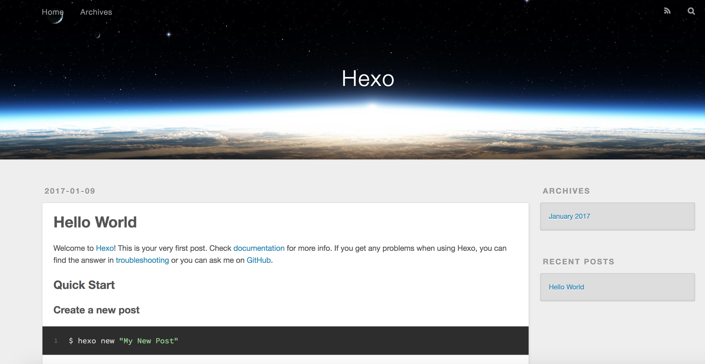
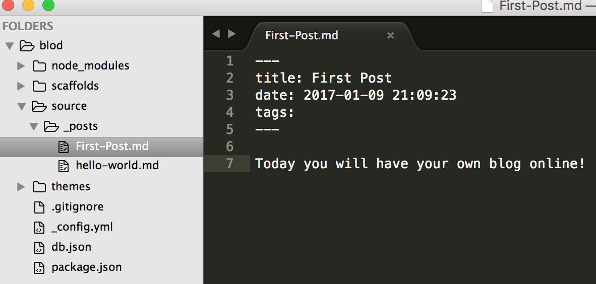
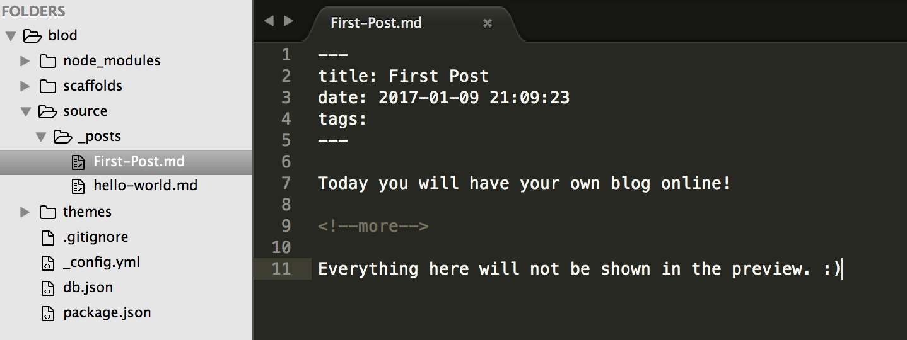
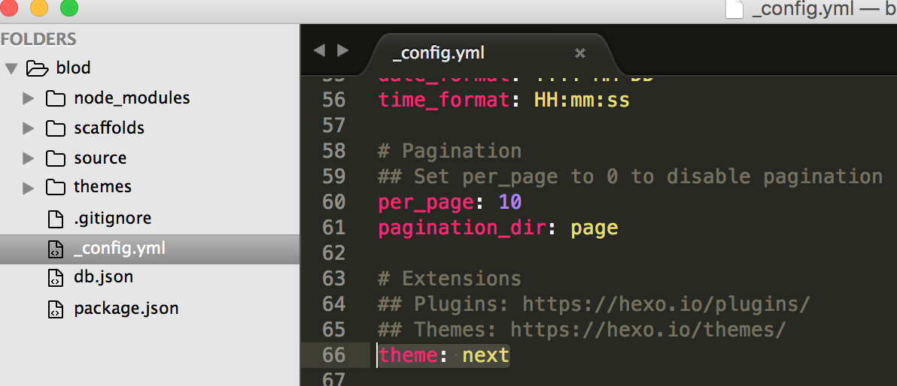
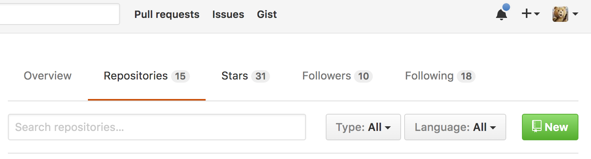
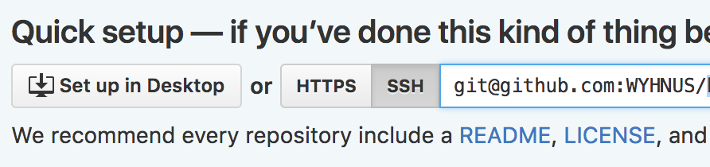
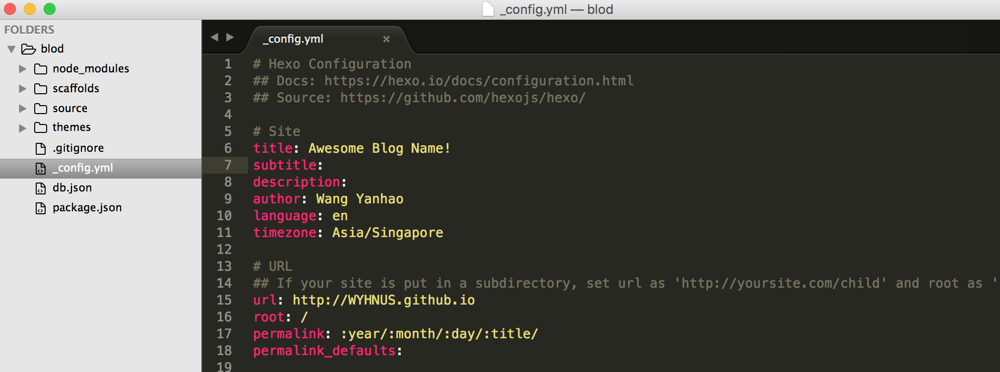
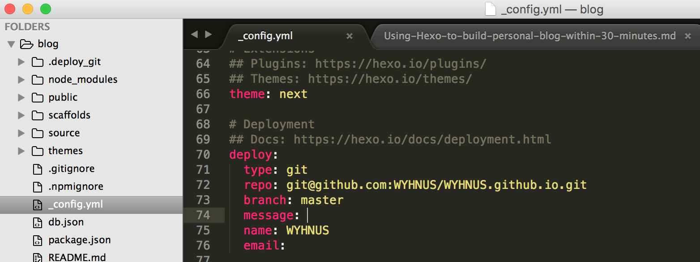

This article is intended to guide people to build their personal blog easily with Hexo which enables users to write posts in Markdown, and deploy the website using Github Pages within half an hour.
Table of content:
- Install dependancies: node.js, hexo, git (5 minutes)
- Hexo basics (3 minutes)
- Write your first blog post (3 minutes)
- Hexo themes and other configuration (3 minutes)
- Deployment (15 minutes)
1. Install dependancies (5 minutes)
You can follow the official instruction, or follow the steps below if you are a Mac or Windows user.
Mac OS:
Enter following command in terminal to install brew, git, node and hexo:
Windows:
- install git: download and install from here
- install node and npm: download and install from here
You might have to restart your computer in order to run Node.js - install hexo with npm: 1npm install hexo-cli -g
Now you are ready to proceed. :)
2. Hexo basics (3 minutes)
Basic commands:
To create a blog where file_name is the blog name:
1hexo init <file_name>To create a new post:
1hexo new <post_name>To generate static files:
1hexo generate # or simply `hexo g`To preview the website locally:
1hexo server # or simply `hexo s`To deploy the website on remote server (in our case, Github):
1hexo deploy # or simply `hexo d`
You can refer to official document for a full list of hexo commands.
To create your own blog, type the following commands in terminal:
Now you can preview your blog via: http://localhost:4000/

Tips
You can press ctrl and c together to stop server
3. Write your first blog post (3 minutes)
Use hexo new <post_name> to create a blog post
For example, let’s create our first post:
You can edit the content of the post under source/_posts/First-Post

Using hexo s to start server and see your own post via http://localhost:4000/
Tips
To avoid showing the whole content of the post in preview, you can add the line: <!--more-->

Give it a try! :)
4. Hexo themes (3 minutes)
If you don’t like the default theme, there are a variety of fancy themes to choose from.
You can follow the instructions given in each theme’s introduction to install them.
For instance, this blog is built using NexT
To install, simply use command
And change theme in blog root’s _config.yml file to theme: next

5. Deployment (15 minutes)
Since we will be using Github Pages to deploy our blog, the first thing to do is to register a Github account if you haven’t done so.
After registering and activating your Github account, create a new repository with name <Github account name>.github.io

Note:
Github Pages have a special naming convention for Github repository, so we have to follow the standard, for instance, my blog repository is named: WYHNUS.github.io , and later you can access the blog via http://WYHNUS.github.io
Now, choose SSH instead of HTTPS,

and type the following commands in your blog’s root folder:
Before deploy the blog, we need to install dependency via command:
The last thing is to change the configuration file.
You may want to update your site’s basic information, such as title, url (which should be http://<your Github account name>.github.io), and author:

Then the deployment setting based on official doc, note branch need to be master, :

Now you can finally deploy your blog via following command!
Happy posting!
Note:
Since only the static content under
publicfolder will be deployed on Github, every time a new post is created or an old post is updated, you need to run the above-mentioned three commands:- delete
db.jsonfile and everything underpublicfolder viahexo clean - re-build them again via
hexo generate - finally deploy via
hexo deploy.
- delete
If you encounter following error message, it means the local folder is not properly connected with Github via SSH:
1234Permission denied (publickey).fatal: Could not read from remote repository.Please make sure you have the correct access rightsand the repository exists.
The problem can be easily solved by following Github’s official guide :)